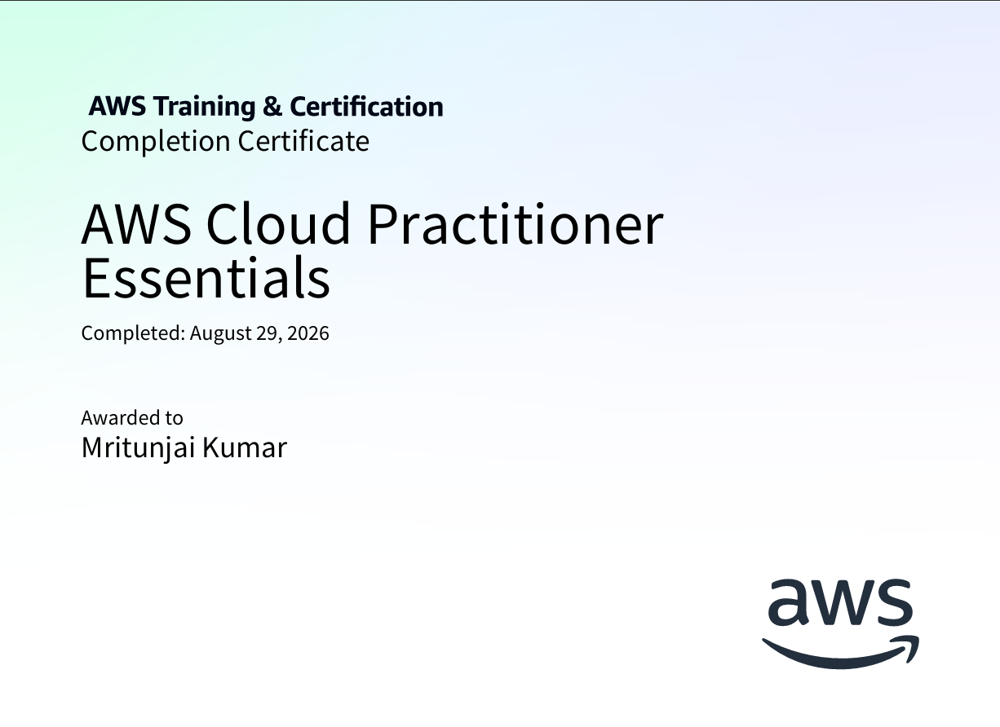
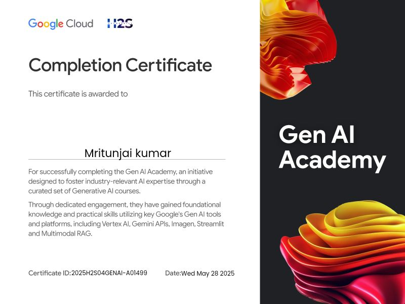

Master of Computer Applications
PES University, RR Campus, Bengaluru
Specialization in Cloud Computing
MRITUNJAI KUMAR / DEVELOPER
I build full-stack applications and explore the cloud systems behind them. Thoughtful interfaces. A curiosity for how it all connects.
CURRENTLY BUILDINGFreelanceChain — a clearer way to collaborate.Explorations in building useful applications
and the systems that support them.
A clearer path from project brief to completed work.
Azure · Bicep · Infrastructure as code
DISCOVER → REQUEST → RESPOND
Python · Flask · Service discovery
Three small windows into the way I build.
Pick an experience and take a closer look.
Play both sides of a collaboration. Submit work as the freelancer, then approve it as the client.
Design direction is ready for submission.
A simplified simulation of FreelanceChain's milestone flow. Sample data only; nothing is submitted or stored.
Follow the storage hierarchy. Select a component to see what it does and how it appears in the template.
Describes the storage resources in code. Parameters make the region, account name, container name and storage SKU configurable.
targetScope = 'resourceGroup'
param storageAccountName string
param containerName string = 'data'One definition, configurable deployments.
Based on the repository's Bicep definition. Exploring this diagram does not create cloud resources.
Watch the numbered tiles, then repeat the sequence. Each round adds one step. Use a mouse, touch, or Tab and Enter.
Ready when you are.
Original Simon Game project ↗A new adaptation for this portfolio, inspired by my Simon Game exercise. No sound, sign-up or saved personal data.
I'm Mritunjai, an MCA student building across the application and infrastructure layers.
I work with full-stack applications, cloud deployment and infrastructure automation. My current focus is bringing these pieces together: useful interfaces, clear service boundaries and repeatable environments.
I'm pursuing my MCA at PES University with a specialization in Cloud Computing, while developing FreelanceChain and exploring cloud and backend systems through hands-on projects.
From browser
to deployment.
AWS · Azure · Docker · Kubernetes · Terraform · Azure Bicep · Helm
React · Next.js · Node.js · Express · Flask · TypeScript · JavaScript · Python · Java
PostgreSQL · MongoDB · Prisma · SQL · Git · GitHub · Jenkins · Azure Pipelines
PES University, RR Campus, Bengaluru
Specialization in Cloud Computing
Marwari College, Bhagalpur, Bihar
AWS Training & Certification · Cloud foundations

View completion certificateGoogle Cloud · Hack2Skill
Vertex AI · Gemini APIs · Imagen · Streamlit · Multimodal RAG

View completion certificate